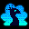
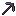
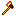
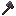
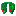
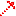
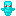
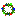
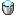
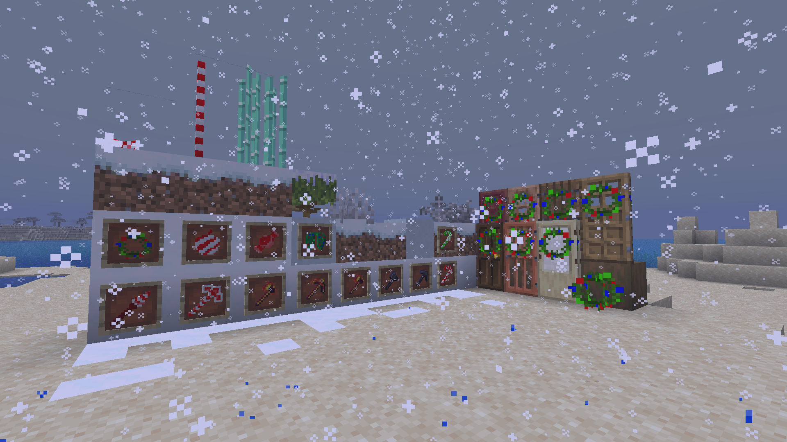

MINECRAFT • 1.21.11 – 26.3
New-Year-Pack
Новогодний текстур-пак: снег вместо дождя, праздничные мечи, кирки, топоры, элитры и снежная земля.

New-Year-Pack
01 • ИНВЕНТАРЬ
Что изменено в паке
Каждый предмет перерисован вручную к Новому году. Все текстуры 16x16.
Алмазный меч
измененоНезеритовый меч
измененоАлмазная кирка
изменено
Незеритовая кирка
изменено
Алмазный топор
изменено
Незеритовый топор
изменено
Элитры
изменено
Булава
изменено
Тотем
изменено
Паутина
измененоБамбук
измененоЗолотое яблоко
измененоЗолотая морковь
изменено
Снежная земля
изменено02 • СКРИНШОТ
Как выглядит пак
Нажми на картинку, чтобы рассмотреть ближе.
